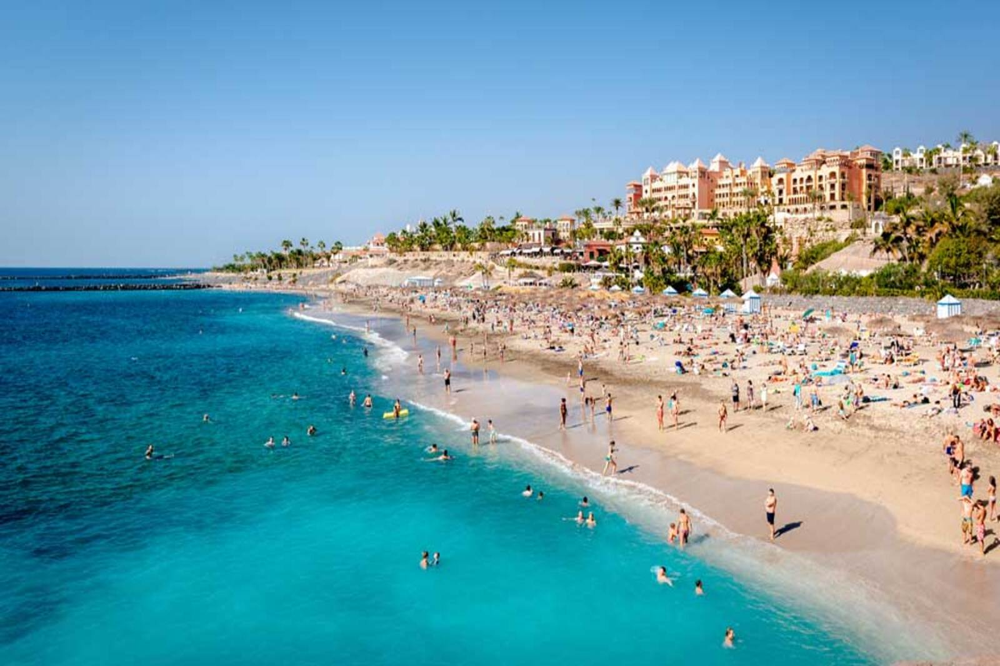
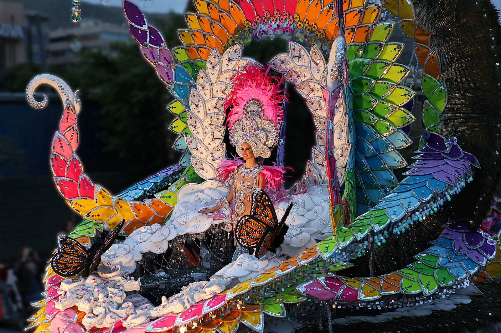
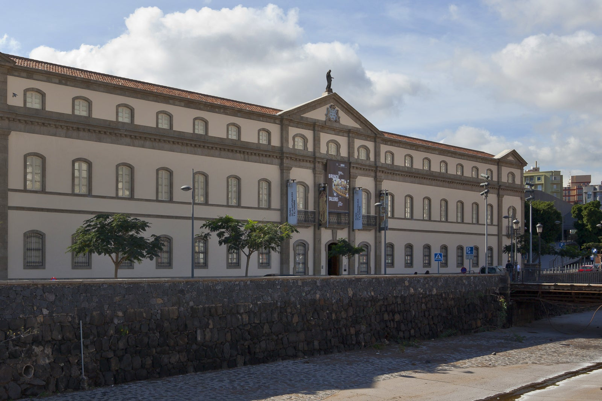
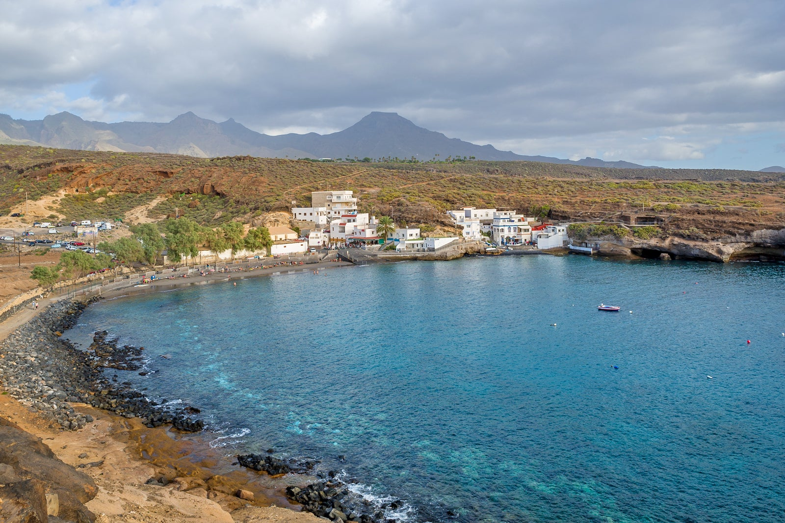
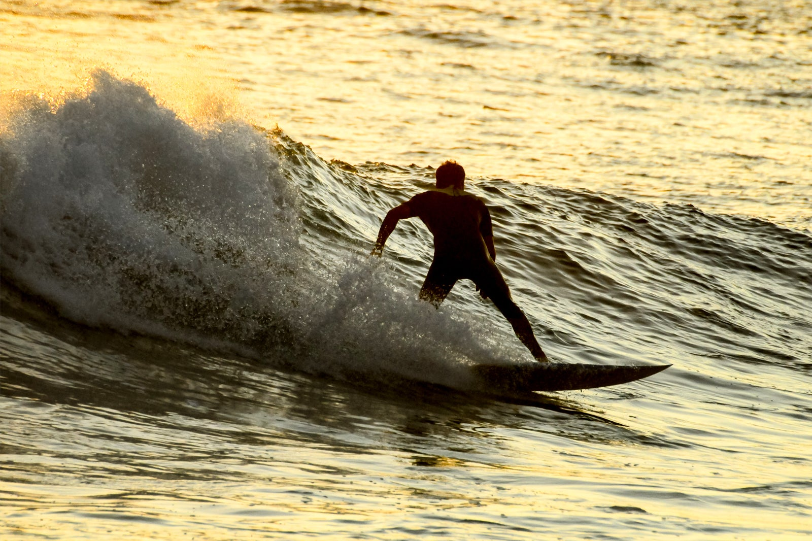

En un lugar privilegiado como Tenerife, el viajero que sabe disfrutar de la vida, la naturaleza y la historia lo tiene todo. Con un pequeño presupuesto podrá disfrutar de grandes placeres y vivir momentos que llevará siempre consigo. Aquí te proponemos una variedad de actividades gratuitas que podrás realizar a tu aire, sin prisa, saboreando un merecido tiempo de descanso en el paraíso.
Una playa diseñada y planificada para que no te falte nada. La playa del Duque Norte, o playa El Beril, se sitúa al sur de la isla, en el término municipal de Adeje. Es una playa que se inauguró recientemente, tras un costoso proyecto de recuperación de este tramo de costa.
No te pierdas el segundo carnaval más famoso del mundo.El carnaval es la fiesta grande de toda la isla, pero se vive con especial intensidad en Puerto de la Cruz y en Santa Cruz de Tenerife. Durante una intensa semana, los desfiles inundan las calles de alegría y celebración.
Descubre los orígenes guanches de la isla en horario gratuito.Una visita muy recomendable por muchos motivos es la del MUNA. El principal motivo es que en este precioso edificio neoclásico se alberga la mayor colección que existe sobre la cultura guanche.
Un reducto natural y auténtico en la costa tinerfeña. El Puertito es una caleta semiurbana, al pie de una aldea de pescadores, que no ha perdido su ambiente auténtico a pesar de estar a un paso de otras playas populares, porque a ella solo se accede por una carretera estrecha y poco señalizada. Reservada a aquellos que busquen una experiencia diferente, en contacto con la naturaleza.
Súbete a una tabla y cabalga las olas.En el municipio de Adeje, muy cerca de playas tan conocidas como la del Duque, está La Caleta, un lugar muy frecuentado por los amantes del surf y el bodyboard. Aunque las condiciones son buenas durante todo el año, la mejor época para este spot es el verano. Es una playa clasificada como de nivel técnico intermedio y experto.
La comida típica de Tenerife mira, sobre todo, al mar. Y no sólo porque en la carta de sus restaurantes y en las mesas familiares triunfen los pescados y mariscos que habitan las aguas que rodean al archipiélago canario. Muchos de los platos destacan por su sencillez, ya que la pobreza y escasez que vivieron nuestras Islas durante años, dejaron su impronta en la cocina del archipiélago. Aquí el producto estrella es la papa, que como verás está presente en muchos de los platos que forman parte de nuestro recetario. Aunque si hay un producto que identificamos claramente con Canarias es el plátano y por supuesto el mojo, otros dos grandes protagonistas de nuestra mesa.
Las papas arrugadas
El gofio
Sancocho
La ropa vieja
Carne Fiesta
El queso asado con mojo
Diseñado por